marlin simulates age-structured marine populations and
fishing fleets across a two-dimensional seascape. You can use it to
explore questions like “how does displaced fishing effort change the
outcomes of an MPA?” or “how does fleet behavior shape spatial depletion
patterns?” — questions where the structure of the dynamics matters more
than precise parameter values.
This vignette walks through the basics: creating species, building fleets, running simulations, and examining the results. Each section introduces one layer of complexity. For deeper dives into specific features, see the other vignettes listed at the end.
library(marlin)
library(ggplot2)
library(dplyr)
library(tidyr)
theme_set(marlin::theme_marlin(base_size = 14))The Three Ingredients
Every marlin simulation needs three things:
-
fauna— a named list of species (created bycreate_critter) -
fleets— a named list of fishing fleets (created bycreate_fleet) -
simmar()— the function that runs the simulation
Optionally, you can also pass a manager
list to simmar to add MPAs, quotas, or effort caps, but
let’s start without one.
A Minimal Example: One Species, One Fleet
Creating a species
The create_critter function builds an age-structured
population. If you supply a scientific_name (or
common_name), marlin will look up life history
parameters from the FishLife
database. You can override any parameter manually.
A few key arguments to know:
-
resolution: the size of the spatial grid (e.g.,c(10, 10)for 100 patches) -
seasons: number of time steps per year (4 = quarterly) -
fished_depletion: the equilibrium biomass ratio (B/B0) you want when fishing is active. This is a target thattune_fleetswill calibrate to. -
adult_home_range: distance (in KM) that 95% of adults move from a source patch per year — controls how mobile the species is -
density_dependence: how recruitment relates to space —"global_habitat"means recruits settle across the whole domain weighted by habitat,"local_habitat"means they stay near where they were spawned
resolution <- c(10, 10)
years <- 20
seasons <- 4
time_step <- 1 / seasons
fauna <- list(
"bigeye" = create_critter(
common_name = "bigeye tuna",
adult_home_range = 5,
recruit_home_range = 10,
density_dependence = "local_habitat",
seasons = seasons,
fished_depletion = 0.4,
resolution = resolution,
steepness = 0.6,
ssb0 = 1000
)
)The critter object has built-in plots for inspecting life history and movement:
fauna$bigeye$plot()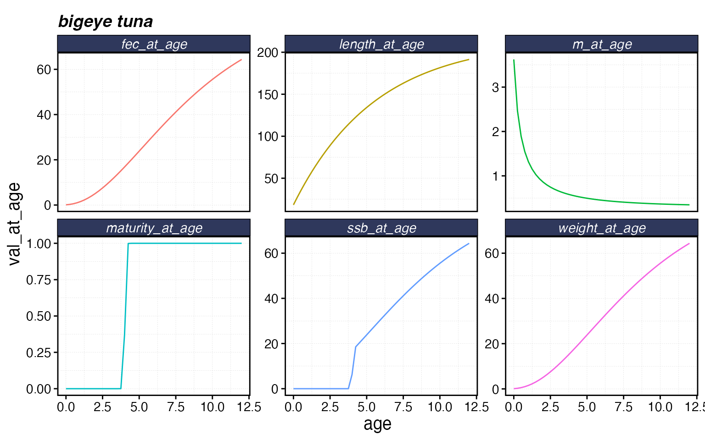
fauna$bigeye$plot_movement()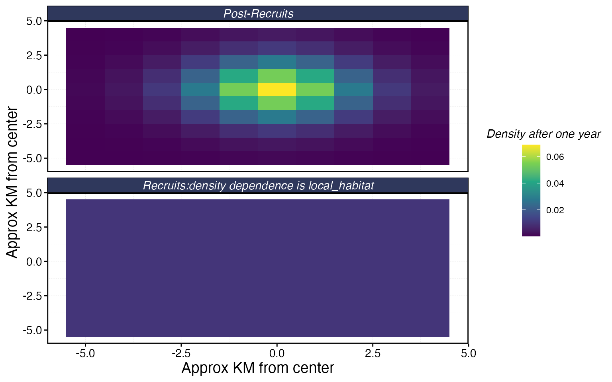
Creating a fleet
Fleets are built with create_fleet. Each fleet contains
one or more metiers — one per species it interacts with
— specifying the price, selectivity, catchability, and share of
exploitation (p_explt).
The most important fleet-level settings are:
-
fleet_model:"constant_effort"(total effort fixed) or"open_access"(effort responds to profits) -
spatial_allocation: how effort is distributed across patches —"rpue"(chase high catch rates) is the default -
base_effort: total effort units at the start
fleets <- list(
"longline" = create_fleet(
list(
"bigeye" = Metier$new(
critter = fauna$bigeye,
price = 10,
sel_form = "logistic",
sel_start = 1,
sel_delta = 0.01,
catchability = 0,
p_explt = 1
)
),
base_effort = prod(resolution),
resolution = resolution,
fleet_model = "constant_effort"
)
)Tuning
You’ll notice we set catchability = 0 and
fished_depletion = 0.4 above. That’s because we use
tune_fleets to find the catchability that produces our
target depletion level. This is almost always easier than trying to
guess catchability directly.
fleets <- tune_fleets(fauna, fleets, tune_type = "depletion")Running the simulation
Pass fauna, fleets, and a number of years to simmar:
sim <- simmar(
fauna = fauna,
fleets = fleets,
years = years
)Examining results
process_marlin tidies the raw output into data frames.
plot_marlin provides quick visualizations.
proc <- process_marlin(sim, time_step = time_step)
# Spawning stock biomass over time
plot_marlin(proc, plot_var = "ssb")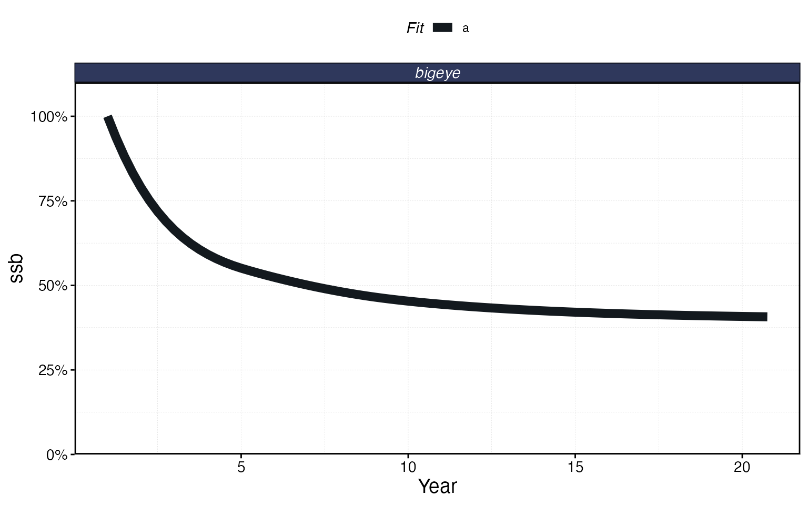
# Catch over time
plot_marlin(proc, plot_var = "c", max_scale = FALSE)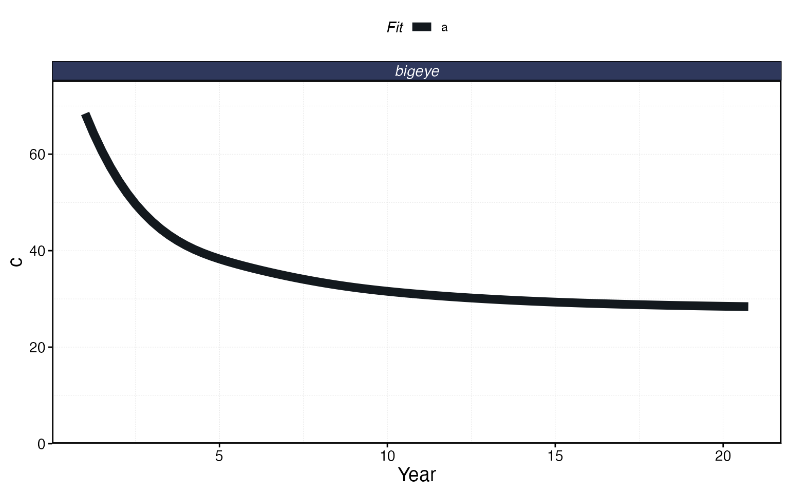
# Spatial distribution of SSB in the final time step
plot_marlin(proc, plot_var = "ssb", plot_type = "space",
steps_to_plot = max(proc$fauna$step))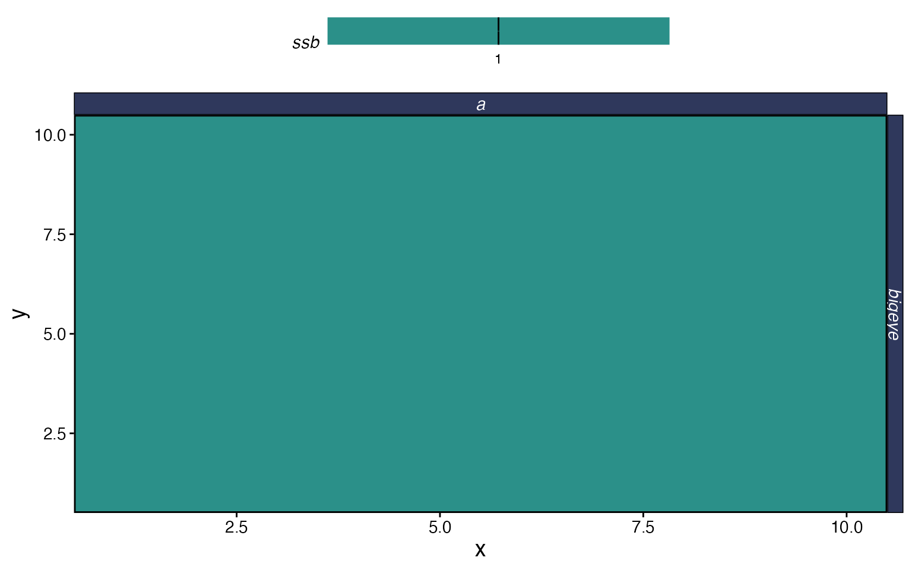
The output of process_marlin is a list with two data
frames. proc$fauna has population-level results (biomass,
numbers, SSB, catch by patch, age, and time step), and
proc$fleets has fleet-level results (catch, revenue,
effort, CPUE by patch, fleet, and time step). You can use these directly
for custom analyses:
proc$fleets %>%
group_by(step, fleet) %>%
summarise(catch = sum(catch), .groups = "drop") %>%
ggplot(aes(step * time_step, catch)) +
geom_line() +
labs(x = "Year", y = "Total Catch", title = "Fleet-level catch over time")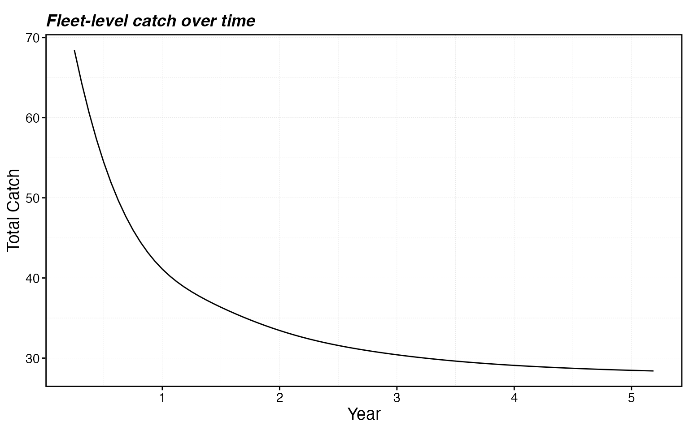
Scaling Up: Two Species, Two Fleets
Real systems have multiple species and multiple fleets interacting in space. Let’s build a more realistic example with spatially heterogeneous habitat.
Generating habitat with sim_habitat
sim_habitat generates spatially correlated habitat maps
for multiple species simultaneously. The kp parameter
controls smoothness (lower = smoother), and you can supply a correlation
matrix to control whether species prefer similar or different areas.
# Species prefer different areas (negative correlation)
critter_cors <- matrix(c(1, -0.5,
-0.5, 1), nrow = 2)
habitats <- sim_habitat(
critters = c("bigeye", "skipjack"),
kp = 0.3,
critter_correlations = critter_cors,
resolution = resolution,
patch_area = 1,
output = "list"
)
bigeye_habitat <- habitats$critter_distributions$bigeye
skipjack_habitat <- habitats$critter_distributions$skipjackBuilding the fauna
Now we create two species using these habitats:
fauna <- list(
"bigeye" = create_critter(
common_name = "bigeye tuna",
habitat = list(bigeye_habitat),
season_blocks = list(1:seasons),
adult_home_range = 5,
recruit_home_range = 10,
density_dependence = "local_habitat",
seasons = seasons,
fished_depletion = 0.4,
resolution = resolution,
steepness = 0.6,
ssb0 = 1000
),
"skipjack" = create_critter(
scientific_name = "Katsuwonus pelamis",
habitat = list(skipjack_habitat),
season_blocks = list(1:seasons),
adult_home_range = 3,
recruit_home_range = 8,
density_dependence = "local_habitat",
seasons = seasons,
fished_depletion = 0.6,
resolution = resolution,
steepness = 0.7,
ssb0 = 800
)
)Building the fleets
Each fleet needs a metier for every species in the fauna, even if a
fleet doesn’t target a species (set p_explt = 0 for
bycatch-only or non-interaction). The p_explt values are
relative: if longline has p_explt = 2 for bigeye and purse
seine has p_explt = 1, the longline accounts for 2/3 of
bigeye fishing mortality.
fleets <- list(
"longline" = create_fleet(
list(
"bigeye" = Metier$new(
critter = fauna$bigeye,
price = 10,
sel_form = "logistic",
sel_start = 1,
sel_delta = 0.01,
catchability = 0,
p_explt = 2
),
"skipjack" = Metier$new(
critter = fauna$skipjack,
price = 5,
sel_form = "logistic",
sel_start = 0.8,
sel_delta = 0.1,
catchability = 0,
p_explt = 1
)
),
base_effort = prod(resolution),
resolution = resolution,
fleet_model = "constant_effort"
),
"purseseine" = create_fleet(
list(
"bigeye" = Metier$new(
critter = fauna$bigeye,
price = 10,
sel_form = "logistic",
sel_start = 0.5,
sel_delta = 0.5,
catchability = 0,
p_explt = 1
),
"skipjack" = Metier$new(
critter = fauna$skipjack,
price = 8,
sel_form = "logistic",
sel_start = 0.3,
sel_delta = 0.1,
catchability = 0,
p_explt = 2
)
),
base_effort = prod(resolution),
resolution = resolution,
fleet_model = "constant_effort"
)
)
fleets <- tune_fleets(fauna, fleets, tune_type = "depletion")Running and examining
sim_multi <- simmar(fauna = fauna, fleets = fleets, years = years)
proc_multi <- process_marlin(sim_multi, time_step = time_step)
plot_marlin(proc_multi, plot_var = "ssb")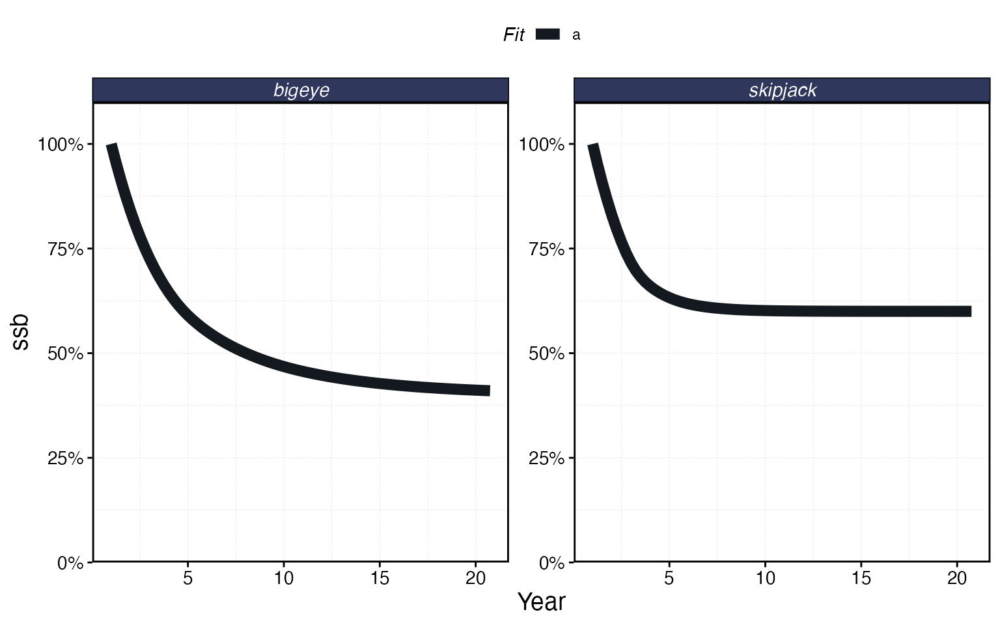
plot_marlin(proc_multi, plot_var = "c", max_scale = FALSE)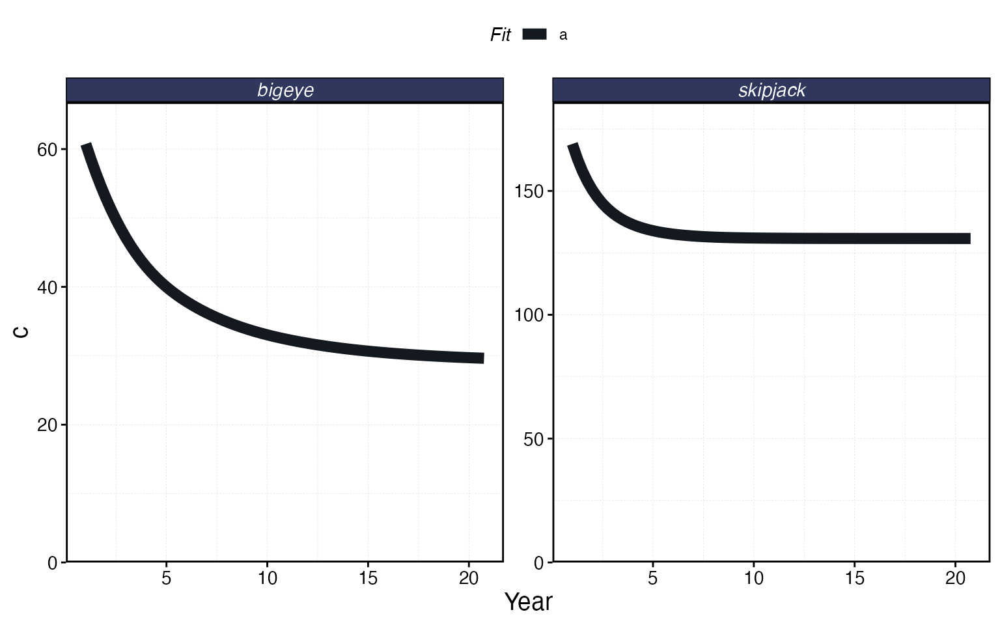
plot_marlin(proc_multi, plot_var = "ssb", plot_type = "space",
steps_to_plot = max(proc_multi$fauna$step))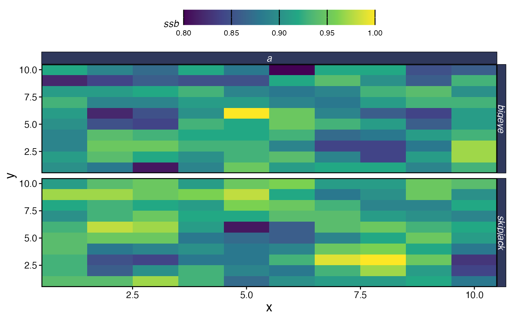
Adding an MPA
One of the main use cases for marlin is evaluating the
impacts of marine protected areas. You specify MPA locations as a data
frame with x, y, and mpa
(logical) columns, and pass it to simmar via the
manager argument. The mpa_year parameter sets
when the MPA is established.
# Protect a block of patches in the upper-right corner
mpa_locations <- expand_grid(x = 1:resolution[1], y = 1:resolution[2]) %>%
mutate(mpa = x > 7 & y > 7)
# Visualize the MPA network
ggplot(mpa_locations, aes(x, y, fill = mpa)) +
geom_tile() +
scale_fill_brewer(palette = "Accent", direction = -1, name = "MPA") +
coord_equal() +
labs(title = "MPA Network")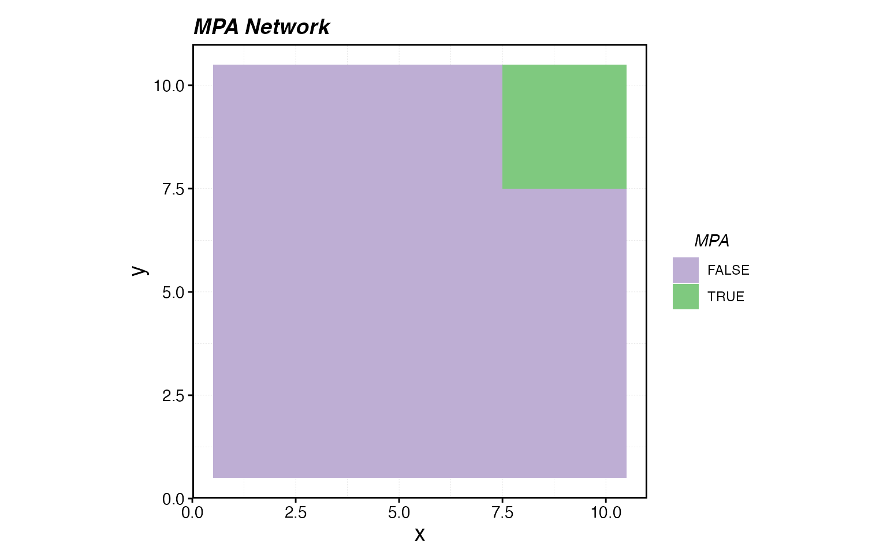
sim_mpa <- simmar(
fauna = fauna,
fleets = fleets,
years = years,
manager = list(
mpas = list(
locations = mpa_locations,
mpa_year = 10
)
)
)
proc_mpa <- process_marlin(sim_mpa, time_step = time_step)plot_marlin can overlay multiple simulation results for
comparison. Pass named arguments to get labeled panels:
plot_marlin(
"No MPA" = proc_multi,
"With MPA" = proc_mpa,
plot_var = "ssb"
)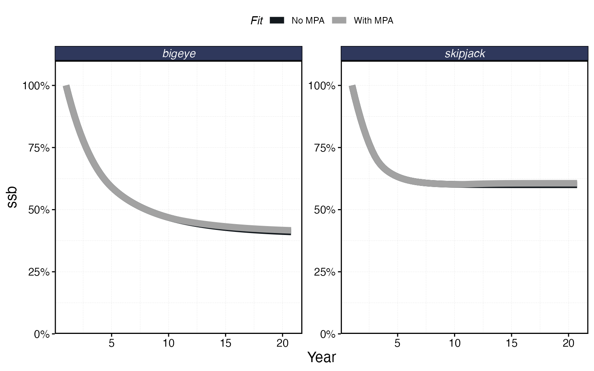
plot_marlin(
"No MPA" = proc_multi,
"With MPA" = proc_mpa,
plot_var = "c",
max_scale = FALSE
)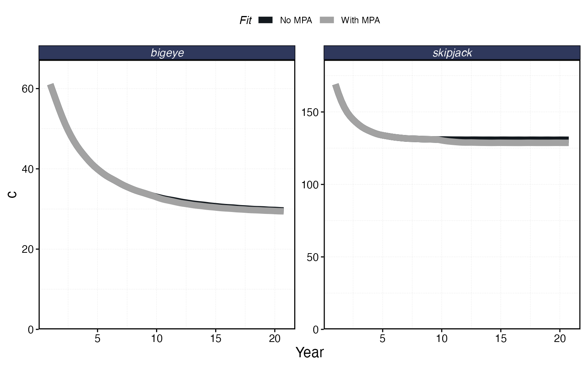
You can also compare spatial patterns:
plot_marlin(
"No MPA" = proc_multi,
"With MPA" = proc_mpa,
plot_var = "ssb",
plot_type = "space",
steps_to_plot = max(proc_mpa$fauna$step)
)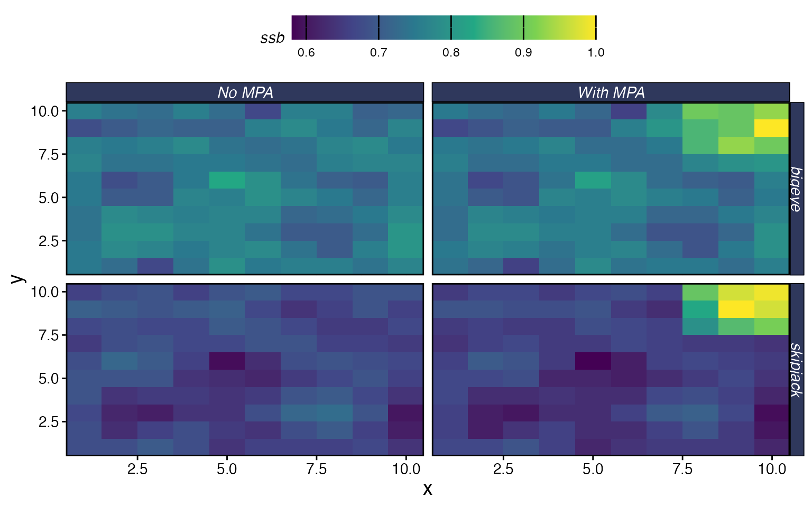
Next Steps
This vignette covered the basics. marlin has a lot more
to offer — here are the vignettes to explore next depending on what you
need:
Fleet behavior:
-
Spatial Allocation Strategies
— how
rpue,ppue,profit,marginal_profit, and other allocation rules shape where fleets fish - Setting and Using Distance from Port — adding travel costs and port locations
- Manage Catch and Effort of Fleets — open access dynamics, quotas, effort caps, and manual effort
- Manual Fishing Grounds and Effort Allocation — controlling exactly where fleets can fish
Species biology:
- Setting & Understanding Movement Rates — how home range and diffusion work
- Set Dynamic Habitats — seasonal habitat shifts and climate-driven range changes
- Setting Selectivity — logistic, dome, and manual selectivity options
- Working with Recruitment Deviates — stochastic recruitment
- Invertebrates — non-fish species
Analysis and design:
-
Management Strategy Evaluation — running
simmariteratively with adaptive management - Measure MPA Gradients — quantifying spillover and edge effects
- Tune Home Range — calibrating movement parameters